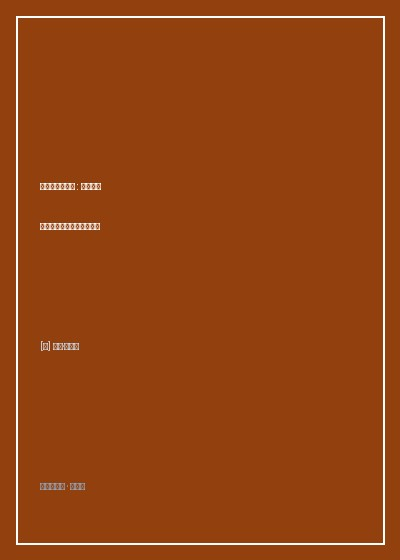

《全民蠢萌的美国》

总体观点
《全民蠢萌的美国》是布莱森举重若轻幽默手艺的极致展现。他避开了政治宏大论述，而是将显微镜对准普通美国中产家庭日常生活里那些理所当然的荒诞小节，证明现代高度发达的物质技术不仅没有让人类变聪明，反而孕育了海量让人哭笑不得的'蠢萌'烦恼。
全书以自嘲为主线，生动解剖了美式过度消费与微观官僚主义的共生结构：从买一台割草机必须阅读厚达四十页的防触电免责警告，到为了争夺一片停车位动辄聘请律师打官司，暴露出繁荣外壳下人们内心的防御焦虑。
布莱森的文字具有强大的治愈力。在嘲讽科技产品繁琐、邻里较真与节日暴饮暴食的同时，始终流淌着对平凡生活的善意宽容，教会我们在荒诞无序的现代日常中学会大笑解围。
核心观点
-
1. 后院工具的军备竞赛：现代中产男性的除草强迫症
为了让门前草坪保持如同高尔夫球场般的平整，男人们购买了足以装备一支轻步兵连的动力吹风机、割草机与除杂草毒气，在后院上演自导自演的工业战。
邻居老汉在清晨六点发动马力强劲的燃油吹叶机，只为了将落在自己车道上的一片枯树叶吹进隔壁邻居草坪。 -
2. 免责标签的荒谬顶峰：当警告标语彻底失去常识底线
在防诉讼律师的操弄下，每一件日常商品都印满了把消费者当智障的警示：吹风机上印着'切勿在熟睡中使用'，熨斗上标明'请勿在衣服穿在身上时熨烫'。
布莱森买了一副折叠梯，梯子四面贴满了警告标志，甚至包含'站在顶端可能跌落'等废话，以至于找不到踩脚的地方。 -
3. 消费过载的挑选绝境：在麦片货架前的认知瘫痪
超市不仅提供选择，更在利用数百种细微差别的包装制造选择焦虑，现代人每天花费数十分钟权衡低脂低糖有机非转基因的营销陷阱。
为了买一瓶普通的无糖酸奶，在冷柜前苦苦研读了十五家乳企的营养成分表，最终精疲力竭两手空空逃离超市。 -
4. 节日狂欢的暴食苦役：把感恩节过成肠胃灾难日
传统节日被商业营销绑架为必须吃下相当于一头大象热量的狂欢节，吃完火鸡全家陷入昏睡，凌晨又爬起来在寒风中排队抢购打折电视。
描写全家人在感恩节大餐后瘫软在沙发上如同中风病患，一边捂着肚子呻吟'再也吃不下了'，一边伸手去抓南瓜派的滑稽场景。 -
5. 在啼笑皆非中原谅世界：幽默是抵抗生活琐屑的减震器
如果不能对每天发生在身边的倒霉事一笑了之，人类迟早会在修水管、排队和电脑死机的摩擦中疯掉，学会自嘲是成人的最高美德。
当新买的高科技智能除雪机在第一场暴雪中冻结罢工时，作者拿起最古老的铁锹吹着口哨开挖，把高科技抛诸脑后。
全书结构
-
第一辑 居家男人的战争：铲雪机、落叶吹风机与荒诞庭院
记录搬入新罕布什尔大宅后与极端冬雪、杂草、浣熊与各种电动工具搏斗的滑稽经历，展现美式郊区生活的硬核折腾。
自制'智能'壁炉点火装置引发浓烟警报，引来全镇消防车大动干戈上门的爆笑乌龙事件。 -
第二辑 消费的迷魂阵：两百种麦片与二十四小时便利店
细致解剖仓储式会员店的打包强迫症、快餐得来速车道的点餐对讲机尴尬，以及信用卡积分兑换的无底洞陷阱。
在开市客（Costco）被大包装诱惑买下一桶足以吃到下世纪的蛋黄酱，最终全家耗费半年尝试用蛋黄酱擦皮鞋与洗头消库。 -
第三辑 规则与诉讼：咖啡烫伤赔偿与微观官僚主义
调侃美国社会令人发指的法务诉讼文化与交通管理条令，解剖人们如何在一句'找我的律师谈'的威胁下丧失常识互信。
因为自家大狗冲着路过的邮递员摇尾巴，收到市政公文要求为狗佩戴精神行为评估矫正器的荒唐公文往返。 -
第四辑 节日狂欢：火鸡、南瓜灯与黑五抢购踩踏实录
记录万圣节讨糖、感恩节烤火鸡以及黑色星期五购物狂潮中美国国民展现的集体狂热与幼稚可爱。
万圣节为了吓唬邻居小孩，布莱森打扮成无头骑士躲在灌木丛里受冻两小时，最后把来送外卖的小哥吓得扔下披萨狂奔的闹剧。 -
后记：给美式幽默留下一张无伤大雅的鬼脸
作者总结美式性格深处乐观、幼稚、勤劳与天真交织的独特魅力，向天下所有在琐碎日子里努力生活的人脱帽致意。
布莱森在结尾写道：'我们可能确实干了不少蠢事，但只要我们还能互相开开玩笑，这个世界就坏不到哪里去'。